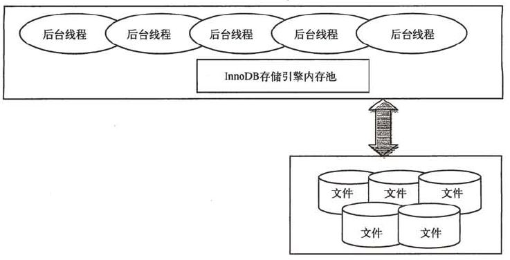

InnoDB是事务安全的存储引擎，设计上借鉴了很多Oracle的架构思想，一般而言，在OLTP应用中，InnoDB应该作为核心应用表的首先存储引擎。InnoDB是由第三方的Innobase Oy公司开发，现已被Oracle收购，创始人是Heikki Tuuri，芬兰赫尔辛基人，和著名的Linux创始人Linus是校友。
InnoDB体系架构

上面是InnoDB的一个简图，简单来说，InnoDB是由一系列后台线程和一大块内存组成。
后台线程
默认情况下，InnoDB的后台线程有7个 —— 4个IO thread, 1个master thread, 1个lock monitor thread, 一个error monitor thread
内存
InnoDB的内存主要有以下几个部分组成：缓冲池 (buffer pool)、重做日志缓冲池(redo log buffer）以及额外的内存池（additional memory pool），如下图所示：

其中缓冲池占最大块内存，用来缓存各自数据，数据文件按页（每页16K）读取到缓冲池，按最近最少使用算法（LRU）保留缓存数据。
缓冲池缓冲的数据类型有：数据页、索引页、插入缓冲、自适应哈希索引、锁信息、数据字典信息等，其中数据页和索引页占了绝大部分内存。
日志缓冲将重做日志信息先放入这个缓冲区，然后按一定频率（默认为1s）将其刷新至重做日志文件。
Master 后台线程
InnoDB的主要工作都是在一个单独的Master线程里完成的。Master线程的优先级最高，它主要分为以下几个循环：主循环（loop）、后台循环（background loop）、刷新循环（flush loop）、暂停循环（suspend loop）。
先来看看主循环，下面是它的伪代码：
其中每秒一次的操作包括：
刷新日志缓冲区（总是）
合并插入缓冲（可能）
至多刷新100个脏数据页（可能）
如果没有当前用户活动，切换至background loop （可能）
和Oracle类似，即使事务未提交，也会每秒刷新重做日志缓冲区。
其中每10秒一次的操作包括：
合并至多5个插入缓冲（总是）
刷新日志缓冲（总是）
刷新100个或10个脏页到磁盘（总是）
产生一个检查点（总是）
删除无用Undo 页 （总是）
接着来看后台循环，若当前没有用户活动或数据库关闭时，会切换至该循环执行以下操作：
删除无用的undo页（总是）
合并20个插入缓冲（总是）
跳回到主循环（总是）
不断刷新100个页，直到符合条件跳转到flush loop（可能）
如果flush loop中也没有什么事情可做，边切换到suspend loop，将master线程挂起。